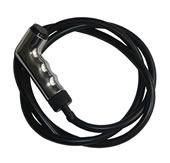
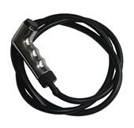

A Plasmarcos é uma empresa especializada em injeções de peças de plásticos e ferramentaria.
Além de produzir nossos produtos como aquecedor de passagem de água, material hidráulico e acabamento de móveis, também terceirizamos serviços de injeção e ferramentaria.
Estamos há 15 anos no mercado de injeção e ferramentaria, evoluindo nossa qualidade e tentando superar as expectativas de nossos clientes.
Explore nosso site, para conhecer mais sobre nossos produtos e serviços oferecidos.
Entre em contato para maiores informações e/ou pedidos.
Estaremos à disposição para lhe oferecer as melhores opções!
 
